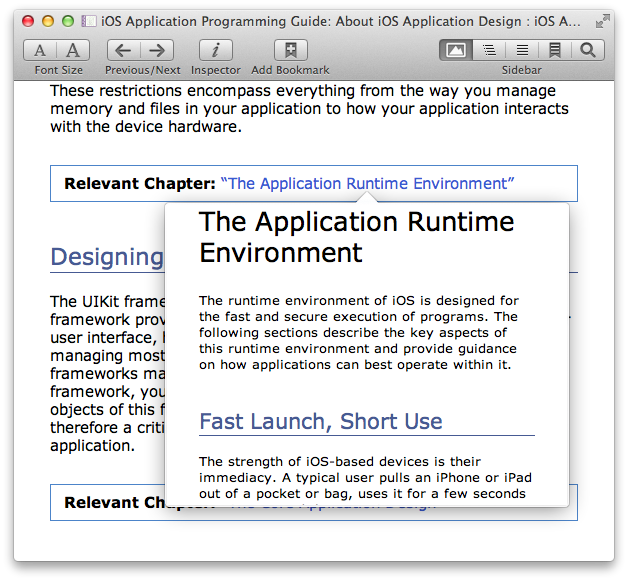

- 


Key Features
Scrolling
Murasaki is a scroll-based reader like usual web browers, not a page flip-based reader like iBooks.
Pagination
(horizontal writing mode only) Murasaki supports the pagination view mode. This is a hybrid view mode which has both a free scrolling and a snapping to column.
Swipe navigation
Murasaki supports two-finger swipe gesture to move between contents (Mac OS X 10.7+). To read through an EPUB, use scroll and swipe gestures on trackpad.
Multi Windows
Murasaki can open different EPUBs in multiple windows. Moreover Murasaki can open different parts of one EPUB in multiple windows at once.
Popover
By opening a link in a popover, you can check a related page, footnote, and so on quickly without moving page (Mac OS X 10.7+).
Image Panel
By opening images in panels, you can read through text with reference to these images.
Searching
You can search a word that is contained in a EPUB.
Bookmarking
You can bookmark, and can refer these pages later.
Full Screen
By entering full screen mode, you can view the EPUB contents in full screen (Mac OS X 10.7+).
User Style Sheet
Murasaki can apply user style sheets.
Popover Dictionary
You can look up a word in popover dictionary.